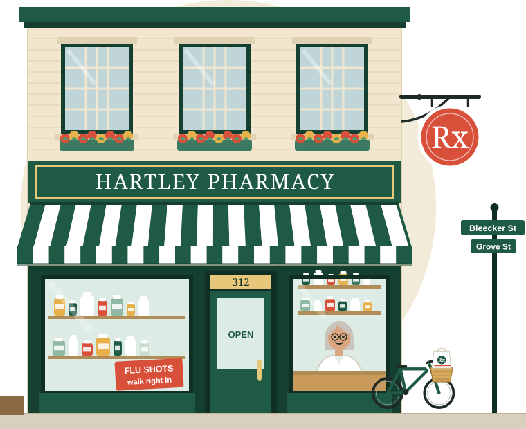
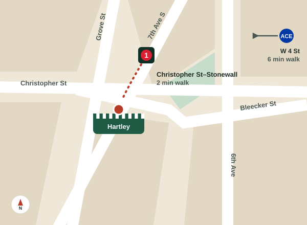

One family, one corner, five generations
The pharmacy has had new floors, new computers and a new awning or two. It still has a Hartley behind the counter, and it still knows your name.

Our story, briefly
Ruth likes to say the pharmacy has outlasted three subway lines’ worth of construction and every chain that opened on Seventh Avenue. Mostly it’s outlasted because the neighborhood kept coming back.
- 1911Erik Hartley, a pharmacist from Bergen, Norway, opens a drugstore at Bleecker and Grove. He sells cough syrup, mixes prescriptions and rents the upstairs to a printer.
- 1946His son Walter comes home from the Navy and takes over. He starts delivering by bicycle, which we still do.
- 1979Walter’s daughter Ingrid earns her pharmacy degree and becomes the first woman to run the store. During the AIDS crisis, she becomes known for staying open late, delivering to anyone who was too sick to come in, and treating every patient with dignity.
- 1998Ruth Hartley-Diaz, Ingrid’s daughter, joins the counter, and so does Sam Weintraub.
- 2020During the pandemic, the team delivers to every corner of the Village and gives more than 6,000 COVID shots.
- TodayRuth runs the pharmacy with her daughter Nora, the fifth generation, and a team that feels like family.
Meet the team
Ask for any of us by name. Hablamos español. A ń sọ èdè Yorùbá.
Ruth Hartley-Diaz
PharmD, owner & pharmacist
Grew up in the apartment upstairs. Trained at Columbia and Long Island University. Still opens the store most mornings.
- English
- Spanish
Nora Hartley-Diaz
PharmD, pharmacist
Came home after five years in hospital pharmacy. Runs senior care, med sync and blister packs, and the family check-in calls.
- English
- Spanish
Sam Weintraub
RPh, pharmacist
Here since 1998. Gives most of our vaccines and handles prior authorizations with great patience.
- English
Dolores Okafor
Pharmacy technician
The voice on the phone. Sorts out insurance, refills and reminders, and remembers everyone’s birthday.
- English
- Yoruba
Marcus Bell
Technician & deliveries
Fills prescriptions in the morning and rides the delivery bike in the afternoon. Knows every doorman below 14th Street.
- English
- Spanish
Come say hello
Pharmacy hours
| Monday–Friday | 8:30am–8pm |
|---|---|
| Saturday | 9am–6pm |
| Sunday | 10am–4pm |
The store is step-free at the Grove Street door. Ask us and we’ll bring prescriptions out to your car or cab.
Directions
312 Bleecker Street at Grove Street
New York, NY 10014
- 1Christopher St–Stonewall. Walk south on Seventh Ave South, right on Grove. 2 minutes.
- ACEBDFMW 4 St–Washington Sq. Walk west on Bleecker past Sixth Ave. 6 minutes.
- MM8 bus stops on Christopher St at Seventh Ave South.
